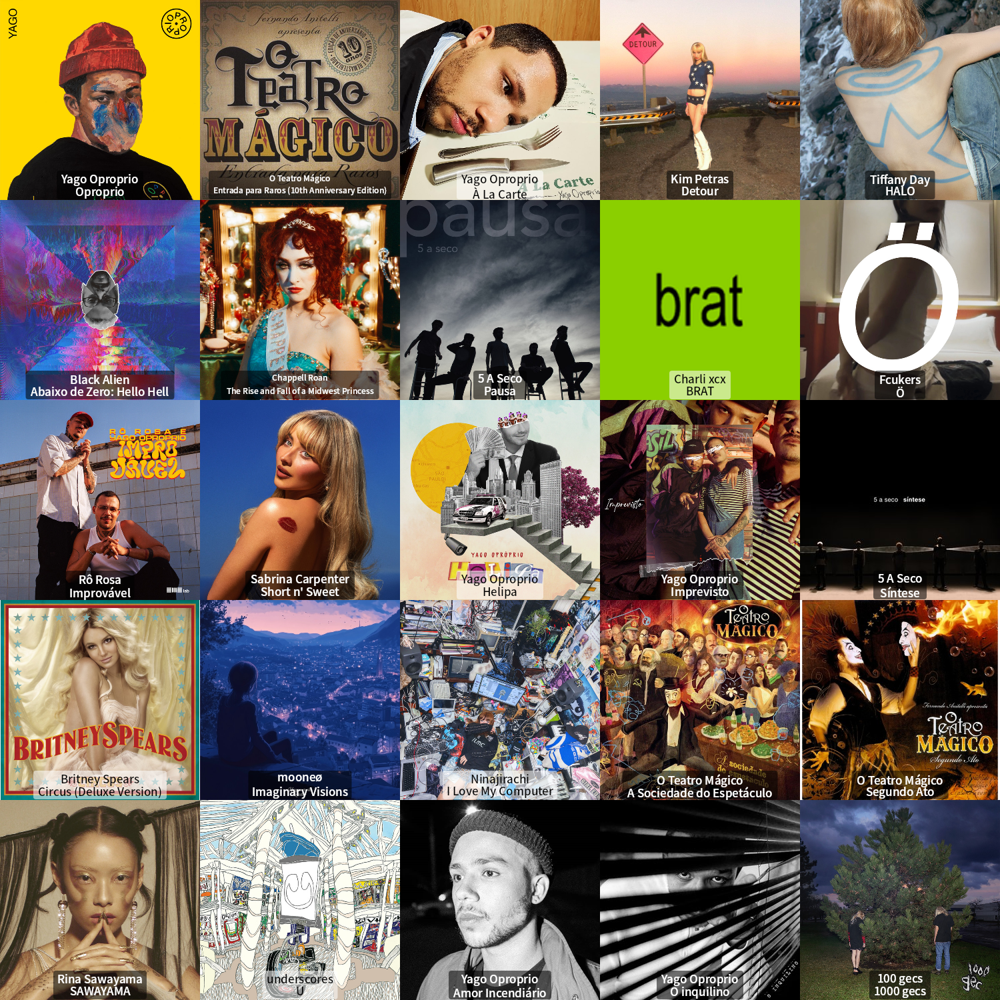

recap julho
esse texto é o #01 do BEDA 2026 (Blog Every Day Of August), um projeto do grupo de blogagem coletiva que eu participo, que é o ENTREBLOGS. dá uma olhada na página do projeto!! a galera é muito massa e tem um post mais legal que o outro.
hoje é o primeiro dia de agosto, e consequentemente, o primeiro dia de BEDA!! (olha, tecnicamente, já é dia 2 pq eu tô terminando o texto às 02h52, mas eu comecei de manhã então vou contar ele como o do dia 1)
pra começar esse projeto, eu vou fazer um recap do mês que acabou de acabar. quero falar um pouco do que aconteceu, o que eu assisti, o que eu ouvi por aqui.
o que rolou por aqui
- a máquina de lavar quebrou e eu tô desde a primeira semana do mês tentando encontrar uma empresa que vá buscar a máquina quebrada pra descarte. aparentemente, todas as empresas que o fazem são péssimas (tô bem frustrada com isso, não sei se deu pra notar risos);
- vi uma das minhas amigas apresentar seu número de dança do ventre, num festival de dança que tinha vários outros estilos de dança e foi bem massa de ver;
- vi minha melhor amiga apresentar uma peça lá no teatro do grupo galpão, e foi lindo. pintei um quadrinho pra ela pra celebrar esse momento.
- participei de um projeto da minha psicóloga de escrita terapêutica
- entrei pro entreblogs!!
o que eu assisti
vi bastante coisa que eu tava enrolando pra finalmente assistir.
- obsession (2025) - pô esse filme nasceu famoso!! que filme bom. que protagonista filho da puta. que construção legal de um filme de terror, já sou fã do curry barker!! já tinha visto o curta the chair dele que é muito bom também, mas é muito diferente fazer um vídeo curto do youtube e um bom filme de terror. pra mim esse filme foi 4/5!!
- backrooms (2026) - esse aqui me decepcionou LEGAL. que filminho mais ou menos!!!! nada acontece!!! pq ela anda com uma PEDRA no bolso??? pq me explicaram tanta coisa no final se a graça do conceito de backrooms é justamente a subjetividade da coisa toda?? 1.5/5
- hail mary (2026) - eu adorei esse filme!! infelizmente, eu tava com muito sono no dia e acabei cochilando durante um pedacinho dele. mas eu gostei bastante, tirando os mil clichês de filme de exploração espacial dos EUA é bem divertidinho de ver e o ryan gosling eh bom nao tem jeito 3.5/5
- em séries, eu assisti community (2009) praticamente inteiro esse mês. adorei essa série!!! 1000/1000 tem episódios melhores e piores mas em geral eu adorei e dei muita risada.
o que eu li
esse mês eu li menos do que eu queria. muito trabalho e essa máquina de lavar quebrada me tirou a paciência completamente.
- corpo desfeito (jarid arraes) - gostei mais ou menos desse livro. o que ficou comigo depois de um tempo foi só o sofrimento da personagem, como nada dá certo, como ela só passa por desgraça.
- the moustache (emmanuel carrère) - divertidíssimo!! é um livro sobre um cara que sempre teve um bigode, ele tira o bigode, ninguém ao redor dele reage e ele entra na maior loucura do caralho uma paranoia absurda pq ele acha que tá todo mundo plotando pra enganar ele. o negócio desenrola tanto que vai pra um lado impossível kkkkkkkkkkkk o final me chocou um pouco
- nós (tamara klink) - comecei a ler mas não tava tão afim de ler, então tá não finalizado. apesar disso, adorei a voz da tamara, ela é uma querida.
- a revolução dos bichos (george orwell) - ouvi esse no trajeto de uma viagem de carro que fizemos, nos 45 do segundo tempo (31 de julho) e gostei um bocado. as vezes quero ler esses clássicos mas não tenho muita paciência, então ouvir ele foi uma ótima opção. ele narrado na audible é mto massa.
o que eu ouvi
esse chart do last.fm gerado com os dados de julho de 2026 resume o que eu ouvi durante esse mês

e é isso, esse eh o recap de julho!! além disso, agora no dia 31, também aos 45 do segundo tempo, viemos pra arraial do cabo. mas isso provavelmente vai entrar no recap de agosto hehe
← voltar pro blog
comentários
ninguém comentou nada ainda. quer me falar o que vc achou?
não foi possível carregar os comentários agora.